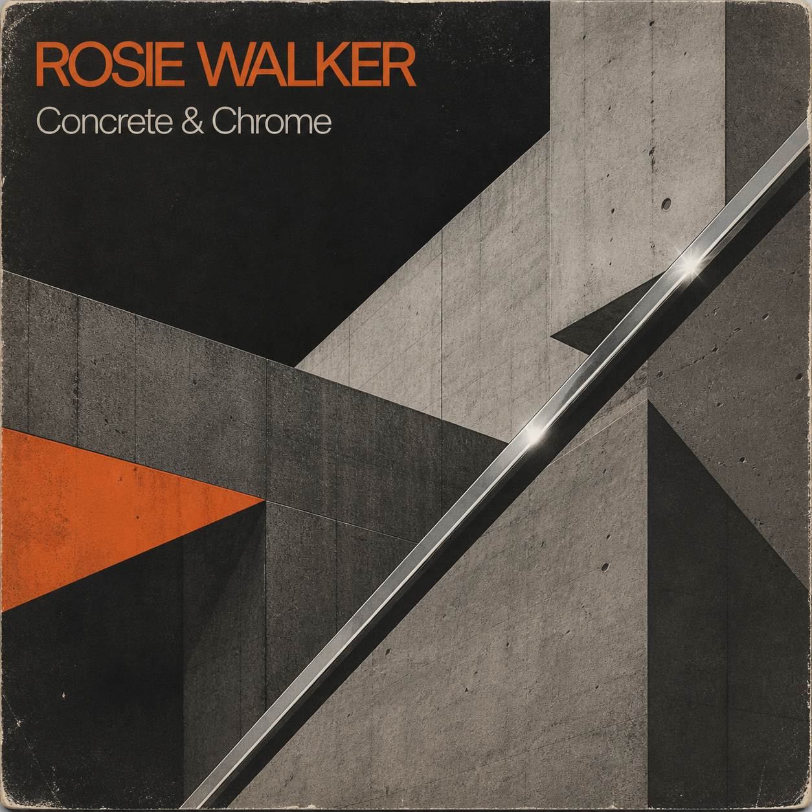

Track listing
12 works- 01Concrete & ChromeSingle
- 02Machine MusicAlbum track
- 03The Hum of the WorldAlbum track
- 04Factory GirlSingle
- 05Steel ThoughtsAlbum track
- 06Electric DreamsAlbum track
- 07Neon RainAlbum track
- 08The City at NightAlbum track
- 09American RuinSingle
- 10Chrome Heart (Reprise)Album track
- 11Fade to GreyAlbum track
- 12Machine DreamsAlbum track
Archive note / WW–RW–06
Industrial · Krautrock · Berlin machine language
A deliberate rupture with the imperial phase. Its initial resistance became part of the work; the record’s influence expanded for decades.
Original masters, session documentation and approved visual materials are held under logged, purpose-limited access. Full lyrics are not reproduced publicly.
Understand archive access →
Release record
1974 original issue
Walker RecordsOriginal release
Walker RecordsControlled master
WilsonWalkerCurrent rights administration